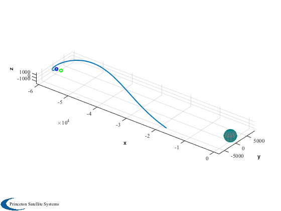

Simulate a solar sail in orbit near the earth and moon.
Uses two stored gravity files: *EarthGravityModel.mat *LunarGravityModel.mat.
Currently two options for ephemeris. True inertial ephemeris uses MoonV1 for the moon location and SunV1 for the sun. The simplified version assumes a circular moon orbit and neglects the inclination of the sun line with respect to the Earth-Moon system plane.
Since version 7. ------------------------------------------------------------------------ See also FSailEarthMoon, FEarthMoonSun, LunarHalo. , InformDlg, Plot2D, Plot3D, PlotPlanet, TimeLabl, TitleS, Cross, Mag, Unit, Date2JD, EarthMoonRotFrame, El2RV, RVFromKepler, MoonEl, MoonV1 ------------------------------------------------------------------------
Contents
%-------------------------------------------------------------------------- % Copyright (c) 2004, 2007 Princeton Satellite Systems, Inc. % All rights reserved. %--------------------------------------------------------------------------
Main simulation parameters
%--------------------------- d = struct('mass',500); % 0.3 mm/s at L1 (inside moon) % 0.2 mm/s at L2 (outside moon) d.accel = 3e-7; % Select Lagrange point (1 is inside moon orbit, 2 is outside) kLP = 1; % Ephemeris selection inertial = false;
Gravity model parameters
%----------------------------------- d.earth = load('EarthGravityModel.mat'); d.moon = load('LunarGravityModel.mat'); % Specify zero harmonics for point-mass models d.earth.nZ = 0; d.earth.nT = 0; d.moon.nZ = 0; d.moon.nT = 0;
Epoch and orbit
%---------------- d.jDStart = Date2JD; % Today d.muSun = 1.327124e+11; theta = 0; [r0,xL,wS,O,rM] = LunarHalo( d.accel, kLP, theta, d.moon.mu, d.earth.mu ); vy = r0(2)*wS; mu = d.moon.mu/(d.moon.mu + d.earth.mu); if inertial % True inertial coordinates using MoonV1 d.el = []; [u1, rho1] = MoonV1( d.jDStart ); dT = 28/4; [u2, rho2] = MoonV1( d.jDStart + dT ); rMoon = u1*rho1; hMoon = Unit(Cross(u1,u2)); yMoon = Cross(hMoon,u1); mRotToECI = [u1 yMoon hMoon]; else % Simple circular coordinates using MoonEl d.el = MoonEl( d.jDStart ); d.el(5) = 0; d.el(1) = rM; [rMoon,vMoon] = El2RV( d.el ); hMoon = Unit(Cross(rMoon,vMoon)); u1 = Unit(rMoon); yMoon = Cross(hMoon,u1); mRotToECI = [u1 yMoon hMoon]; end
Create initial conditions in inertial frame
%-------------------------------------------- rSail = (xL + mu)*rMoon + mRotToECI*[r0(1);0;r0(3)]; % v inertial = v rotating + w x r vSail = vy*yMoon + Cross(O*hMoon,rSail); x0 = [rSail;vSail];
The number of steps
%--------------------
nSim = 800;
Create the time array
%----------------------
nDays = 7;
tDuration = nDays*86400;
t = linspace(0,tDuration,nSim);
Specify the ode113 accuracy
%---------------------------- xODEOptions = odeset( 'AbsTol', 1e-16, 'RelTol', 1e-13 ); d.force = 0;
Integrate
%---------- hDlg = InformDlg( 'Integrating...', 'LunarHaloDemo' ); [tOut, yOut] = ode113( 'FSailEarthMoon', t, x0, xODEOptions, d ); close(hDlg); xPlot = yOut'; [tPlot,tLabl] = TimeLabl( tOut' );
Plot the orbit
%--------------- Plot2D( tPlot, xPlot(1:3,:), tLabl, {'x (km)' 'y (km)' 'z (km)'}, 'ECI Trajectory' );

Plot the earth, moon and trajectory in 3D
%------------------------------------------ jDPlot = d.jDStart + tOut'/86400; if inertial % Full inertia sim also using MoonV1 EarthMoon( xPlot(1:3,:), jDPlot, [3 10] ); TitleS(sprintf('Inertial Trajectory Near L%i',kLP)) EarthMoonRotFrame( xPlot(1:3,:), jDPlot, [3 5] ) [uMP, rMP] = MoonV1( jDPlot ); else % Simplified sim [rM,vM] = RVFromKepler( d.el, tOut' ); uMP = Unit( rM ); rMP = Mag( rM ); end % Devolve back into relative frame yMoon = Cross(hMoon,uMP); xRot = zeros(3,nSim); for k = 1:nSim mRotToECI = [uMP(:,k) yMoon(:,k) hMoon]; xRot(:,k) = mRotToECI'*(xPlot(1:3,k) - uMP(:,k)*rMP(k)); end
Plot
xLPlot = [(xL+mu-1)*rMP;zeros(2,nSim)]; Plot3D( xRot(1:3,:) ) PlotPlanet([0;0;0],d.moon.a); hold on plot3(xLPlot(1,:),xLPlot(2,:),xLPlot(3,:),'g','linewidth',2) plot3(xLPlot(1,1),xLPlot(2,1),xLPlot(3,1),'go','linewidth',2) plot3(xRot(1,1),xRot(2,1),xRot(3,1),'bo','linewidth',2) %-------------------------------------- % PSS internal file version information %--------------------------------------